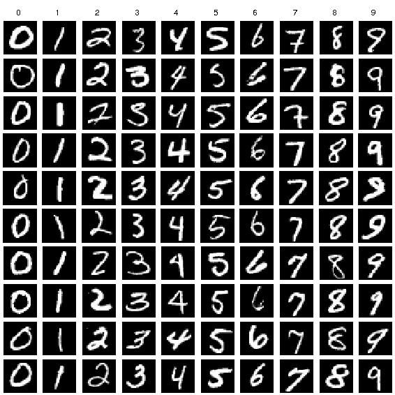
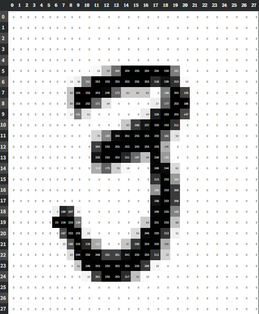
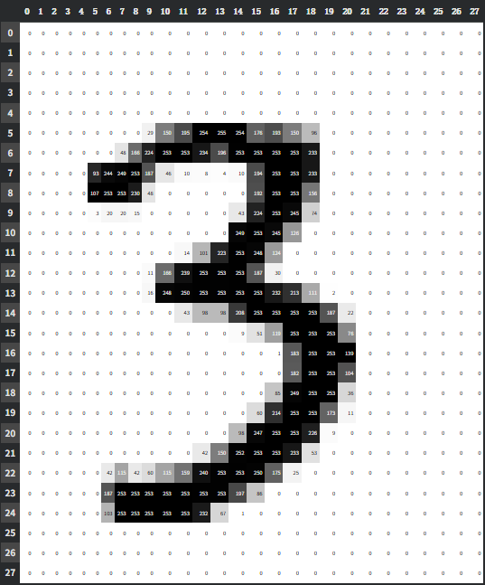
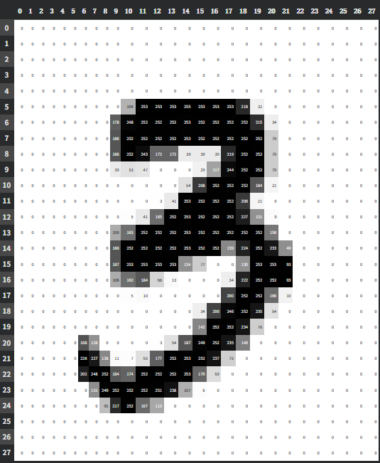
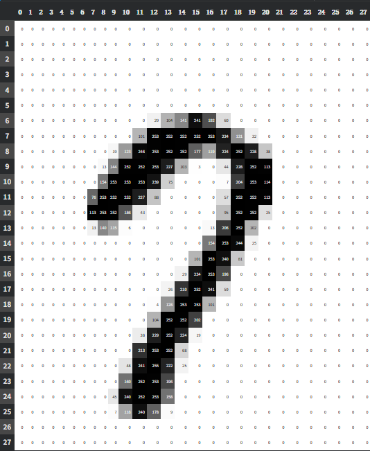
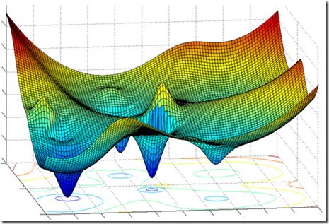
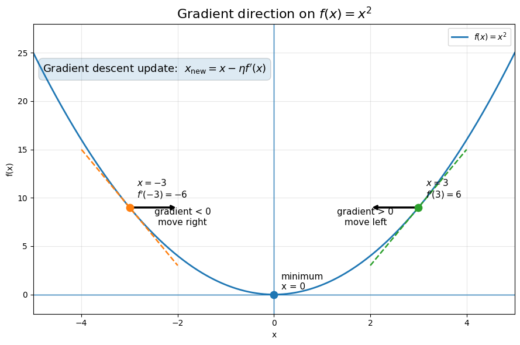

the MNIST dataset
An introduction to the building blocks of deep learning
Multiple inputs → one output via an activation function (sigmoid, ReLU, tanh, …).
One reason neural networks are so special is that they are trainable.
MNIST: handwritten digit images collected by the National Institute of Standards and Technology. This dataset helped make LeNet the defining CNN architecture.


Each pixel: 0–255. Total: 784 pixels per image.
We instantly see "3". A computer sees three completely different images.


Given 28 × 28 grayscale grids — how do we tell them apart?

The simplest method: compare pixels to a reference image and classify by the closest match.
In Colab, we stack the training images into a rank-3 tensor, then normalize every pixel from the 0-255 range down to 0-1.
Combine many 28 × 28 images into one tensor with torch.stack.
Scale raw grayscale values so the model works with a cleaner numeric range.
Use the mean across training images to build a "perfect 3" and a "perfect 7".
Average pixel values across all the training 3s.
Average pixel values across all the training 7s.
Since images are just numbers, we can compare each pixel in the given image with the corresponding pixel in the reference image.
Mean Absolute Error: take the absolute difference at every pixel, then average them.
Root Mean Squared Error: square the differences first, so larger mistakes count more.
Could we use a sum instead of a mean? Sort of yes and no, but the mean keeps the scale easier to compare.
The simple pixel similarity algorithm works surprisingly well, but it is still just memorizing an average pattern.
A loss function, also called a cost function, tells us how well the neural network is achieving the goal.
Training is the process of finding weights and biases that minimize this quadratic cost.

Imagine standing on a mountain in the dark, trying to reach the lowest point in the valley.
The derivative tells us how rapidly the function changes at a particular point.

In higher dimensions, a derivative becomes a gradient: a vector containing the derivative with respect to every parameter.
The next step is turning the ideas into code: define the layers, initialize parameters, and build the training loop.
import numpy as np
class NN:
def __init__(self, layer_sizes, seed=42):
self.layer_sizes = layer_sizes
self.num_layers = len(layer_sizes)